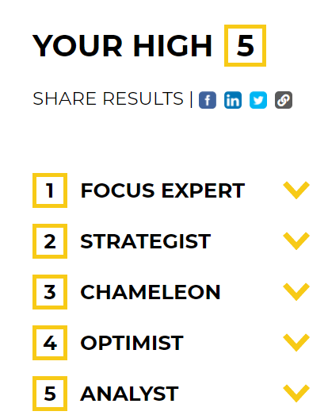

Identity & Values
Using a Strength Finder tool these are considered my top 5 strengths:
- Focus Expert
- Strategist
- Chameleon
- Optimist
- Analyst
This was an interesting exercise as I hadn't done any personality testing since I had started my masters a few years ago. These are all attributes which I have attempted to cultivate. That focus expert is at the top I find especially interesting. As making sure I've 'put my ladder against the right wall' is extremely important to me.
Given I wish to persue an entrepreneurial career the other strengths are also important. Strategist is pretty self-explainatory in my view. Without having a specific decision making framework and thesis about the future and where a new company could take shape I would be relying entirely on luck that I was working in a useful direction.
Being a chameleon is also something I've had to actively work on. As a natural introvert building the skills to interact effectively with a wide range of people has been important both in life and in my career.
To be an entrepreneur an optimistic outlook is very useful. If I don't believe there are opportunities or a chance for success intrinsically no one is going to give it to me.
Finally, being able to step into 'the weeds' to investigate markets, techonology, the wider environment & even at a lower level understand data and pull together insights will be immensly important as someone guiding a ship in the modern era.
The last time I did a reflection exercise on values was at the start of my masters with the 10 Behaviours company faciliated by Dr. David Keane. Part of that course was to distill the 4 key values which you hold closest to you. Upon relfection I still hold these to be true. Which are (in not particular order):
- balance
- learning
- health
- responsibility
These still feel fundamental to me. And I enjoy a quip by Mitt Romney on balance:
At one point I felt I wasn't doing as much as I should be doing at home with my kids. Also feeling I wasn't doing as much as I should be doing at work. And also feeling as much as I should do at church and my assignment there. And then realising that meant things were pretty well in balance.
This has struck me as an accurate state of being for me when I try to fit a lot into my life. As already mentioned the strength finder tool uncovered my top priority is focus I try to remove as much from my life that isn't aligned with what I truely want.Which ultimately comes down to loving connections with my family and close friends, making a significant positive impact in the world, and ensuring I stay healthy doing so.
Also important to me is integrity and knowing that I walk through life in a way that gives me pride in my actions. Especially treating others well (alongside being kind to myself). While I don't always meet this standard I do my utmost to reflect on it and if others have been impacted by my actions to apologise and adjust my behaviour moving forward.
A specific example of this focus on priorities is a choice I made at the end of my undergraduate degree. My intention was to move overseas and study web development while exploring the world (at least the parts with a good internet connection). However, around the same time I had a family member who needed support. I evaluated what I prioritised more and decided that remaining in New Zealand to support my family was of higher priority than my personal whims. As part of that decision I let go of web development for that period of time and chose activities which were less cognitivly demanding. However, I look back on that decision with pride. Whereas I believe if I took the travel and personal development route & anything negative happened with my family I'd regret it forever.
As a result of this the family member got the support they needed and I only postponed my goals.
My culture as a Pakeha New Zealander has shaped me in that I act in a largely individualistic manner. Building a growth mindset has come quite naturally to me and haven't experienced anyone stating that I'm not able to do something and Dweck's work just made sense. Although I view a healthy community as important and cherish the strong connections I have with my friends and family I naturally bend more towards an individualistic approach to life. Specifically in that I focus my efforts on becoming a better person and walking with integrity than being involved in a large number of groups.
That this line of thinking has been re-enforced by the wider culture of New Zealand rather than just my immediate family can be seen via the Hofstede culture survey.
NZ is ranked as 79/100 in a score of individualism. However, in my experience when discussing this work with those of Māori or Pacifika backgrounds they strongly challenge that it is reflective of their experience in their culture. And would consider their cultures much lower on the individualism scale. Which points to a bias of the data being taken from a largely Pakeha cohort. This experience further re-enforced the importance of ensuring there are others in the room who have different perspectives than yourself in a decision making process. As I certainly have blind spots (as does everyone) which don't need to be weaknesses as long as others views are heard and valued.
Describe Strengths & Limitations
My main strength in terms of L&D is that I activley wish to develop myself and my skills. I also tend to pick up ideas reasonably quickly and am also willing to be bad long enough to build a new skill. When I take the time to actually drill skills I also seem to retain them as well. However, in the past it is rare that I've actually actively attacked performing tasks and building skills to the level of unconcious competence. Latin dance is probably the skill I've drilled the most and have the highest level of retention.
This has meant I've forgotten a lot of the skills and knowledge which I have previously built. Furhermore, the notes I've taken have been scattered and aren't in a useful format for reference. To conteract that I've started using PKM (personal knowledge management) to consolidate my learning in one place which is searchable and more easily referenced going forward. This is a habit I did hapharzardly at work but have been improving the system over time giving my notes more structure.
Another weakness is letting myself change course before finishing a task if it has been only for myself. When I'm in a group setting or feel accountable in anyway this isn't an issue. But the fact I've failed to teach myself the fundamentals of Web Development over the last 7 years is proof of this. Many courses have been started then put to the side when other priorities come along and don't get picked back up. In this year off I'm taking by starting with Dev Academy I intend to make my environment one where I succeed.
The most recent example of a collaberation challenge was at work. Up until this point I had been able to pro-actively seek out people in the organisation who knew the information the projected needed personally. However, there was a person in our wider working group who wished to control the flow of meetings with 'the business'. My reaction to this was not productive and ended up having much less facetime with stakeholders than I would allow in any other project. Unfortunately, (and I take ownership of this) the project got further behind than it should've as me and this person didn't communicate our expectations of each other clearly. The lesson I've taken from this is to be crystal clear around who is doing what and how we intend to work. And have not encountered this type of issue since. This is something I intellectually knew was important but since viscerally feeling the negative consequences when that doesn't happen I'm more quick to realise if there's a communication road block.